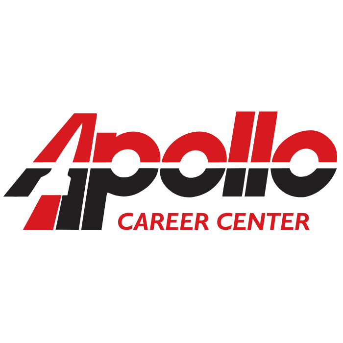
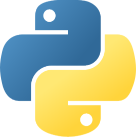
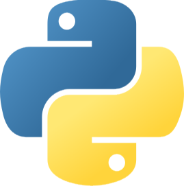
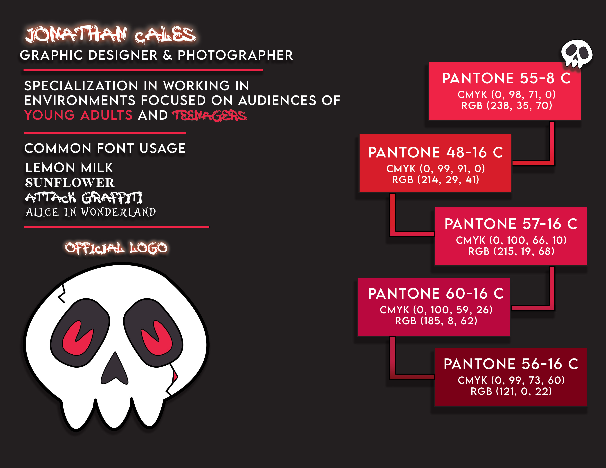
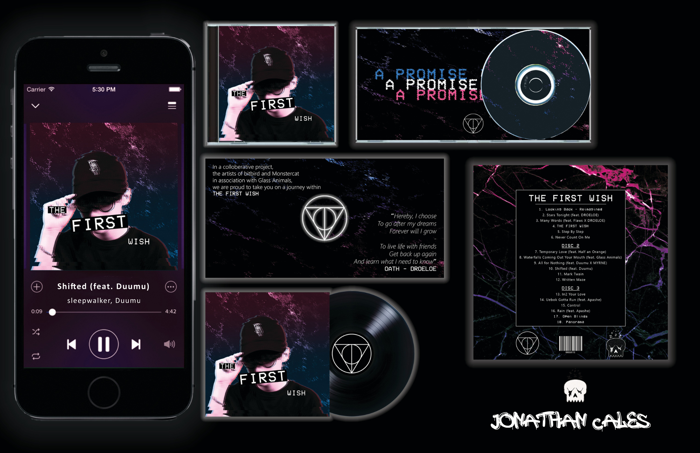
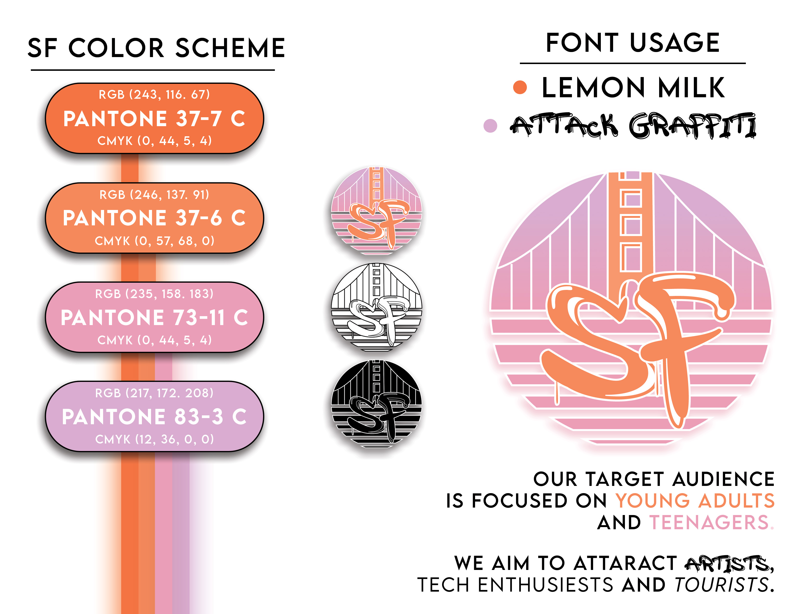

Jonathan Cales
Computer Programmer & Visual Designer
Meet Jon

I am a computer programmer who loves to experiment with full-stack development in pursuit of becoming a software engineer. I went to school at Rhodes State College where I graduated with an Associates Degree in Applied Science with a major in Web & Computer Programming. I value making a long-term impact and aspire for a career that helps me do so while staying in touch with information technology, systems analysis & design.
Where I've Been

What I've Worked With


 



Projects
See what I've done over the past four years from my time at my career center, to my time at college.



Programming works can be observed on my GitHub.